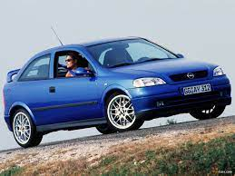

Opel Astra G (1999 - 2001)
O Astra G foi lançado na Europa em 1998. Estava disponível como um hatchback de três ou cinco portas, sedã de quatro portas, carrinha de cinco portas (na tradição da Opel , conhecido como "Caravan") e duas versões especiais de 2000: o Astra Coupé e o Astra Cabrio, ambos projetados e construídos por Bertone. O Astra G recebeu a introdução de um motor movido a gás natural. Seu chassi foi afinado pela Lotus e formou a base de um MPV compacto de 7 lugares, o Opel Zafira. Aproximadamente 90.000 coupes foram produzidos.